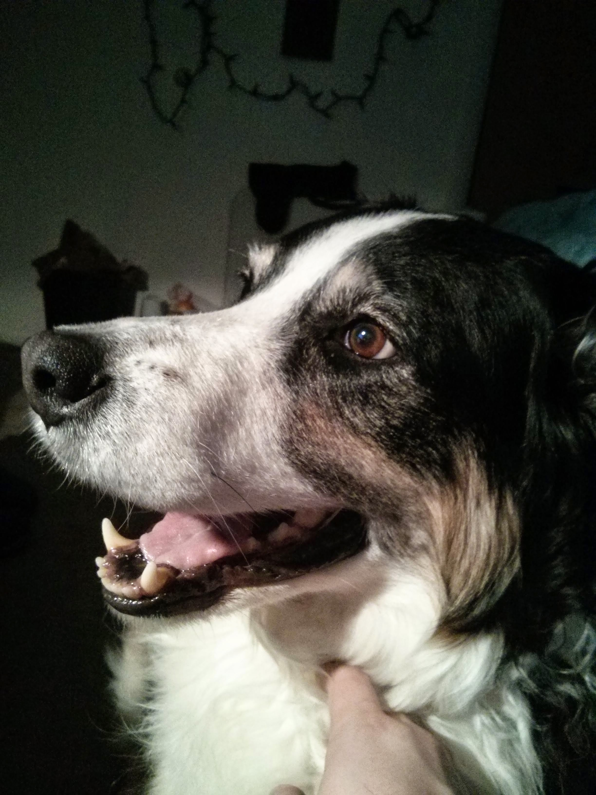

Maggie The Magnificient
Agent Maggie:
Permanent Rank:
Lt. GeneralAge: REDACTED
I present to you, Maggie the Border Collie. You may not have heard of her; that's because she was a secret agent
Maggie went by many names.
Here are a few of her aliases:
- Maggie
- Maggie Moose
- Magoo
- Lt. General Moose
- Lord Moosius
Overview:
Maggie specialized in human care and protection. She was the protector of asset codenamed "Pup". Pup was injured and in need of protection. Maggie was the agent to perform the caring. Maggie was able to do bedroom reconisance and household search and rescue operations. When the need arose Maggie was also capable of HVT herding.
Background:
Some background on Maggie. She was located in the state of Florida, where she had been investigating a possible underground puppy mill, she found herself at the pound for this investigation. When it was determined that there was no credible threats in the area, she recieved her next assignment.
2007: Maggie has located the family in which Pup has been predetermined to join. She begins her operation by infiltrating REDACTED. She links up with codename "Babe". Babe is the assigned handler for Maggie and in the future Pup.
2010: Maggie is finally able to locate her assigned HVT. Asset "Pup", finally joins the REDACTED. This leads to the lifelong assignment of Maggie.
July 7th, 2011:, Babe is finally assigned to Pup permanently. Maggie holds down the fort.
2012-2016: REDACTED: TOP SECRET
Operations:
- Operation Undercover Doge
- REDACTED
- REDACTED
- REDACTED
- Operation Teufelshunde
- REDACTED
- Opertion Herd a Sound
- PUP